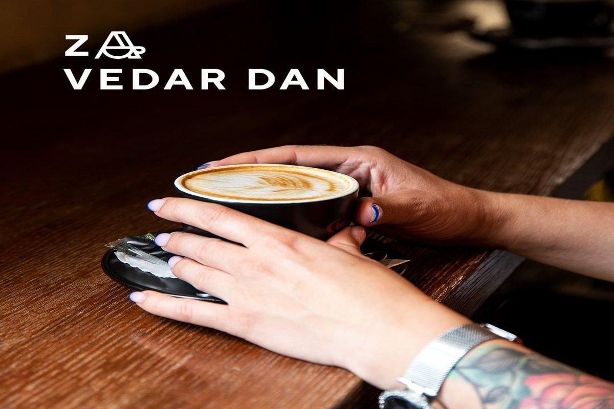
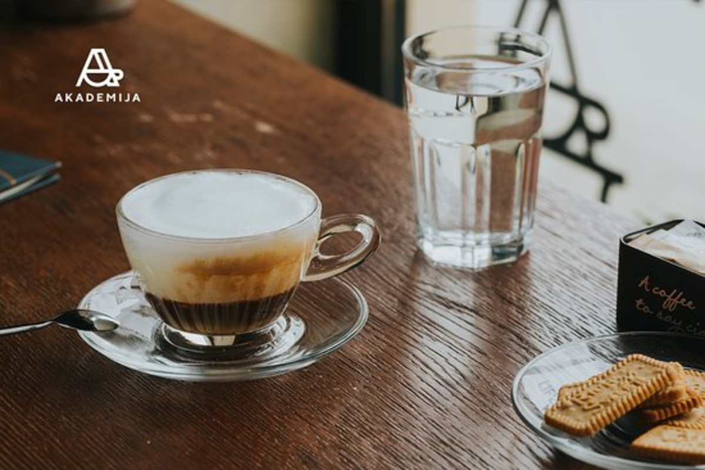
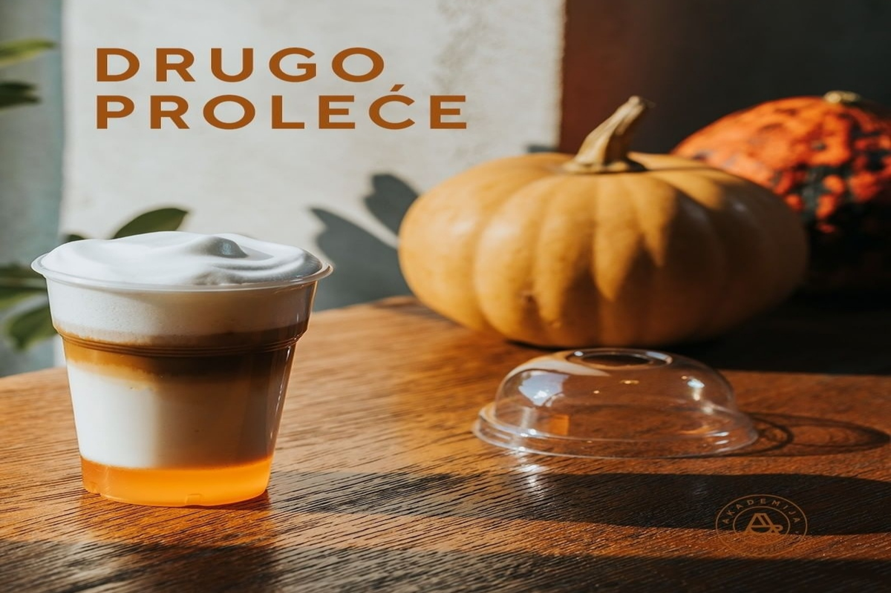
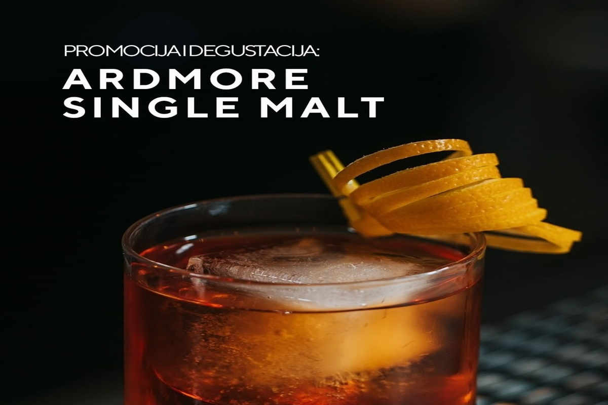
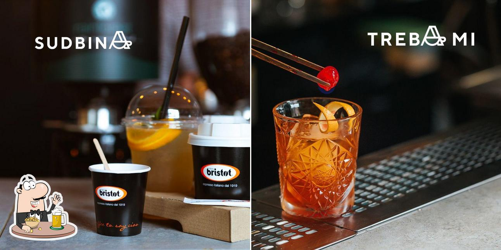
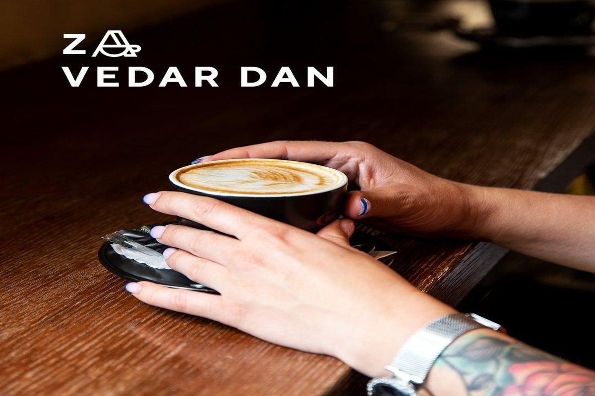
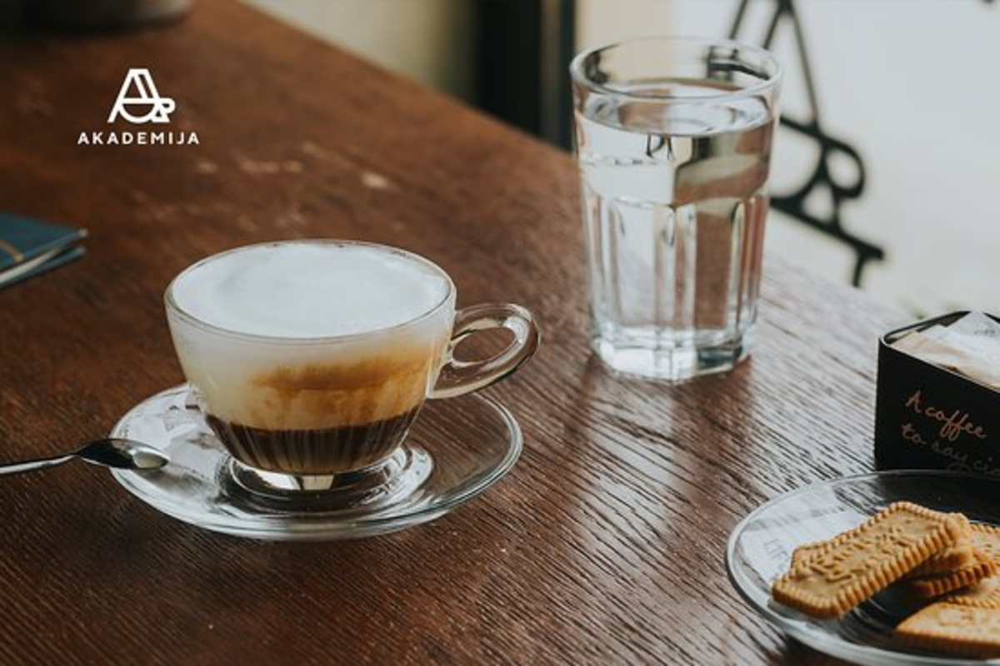
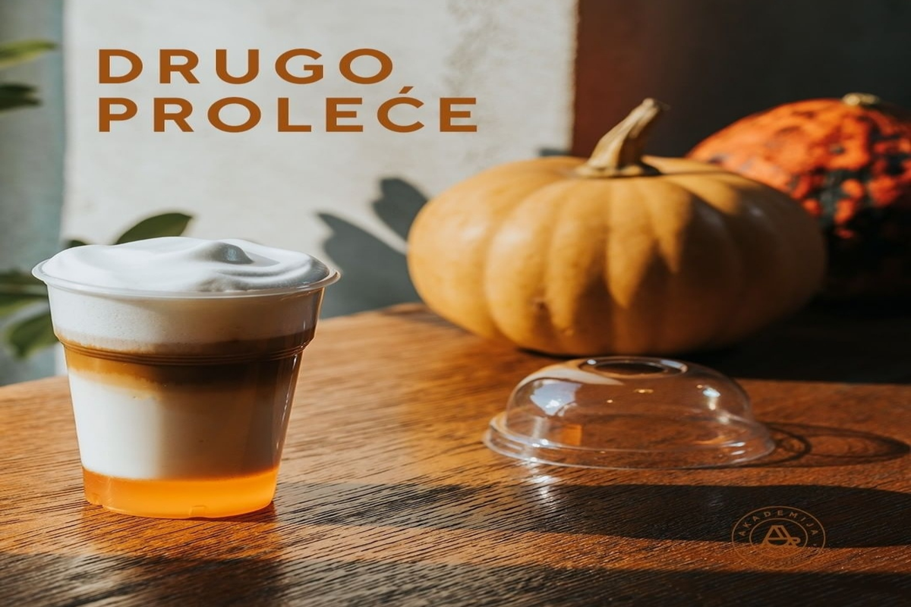
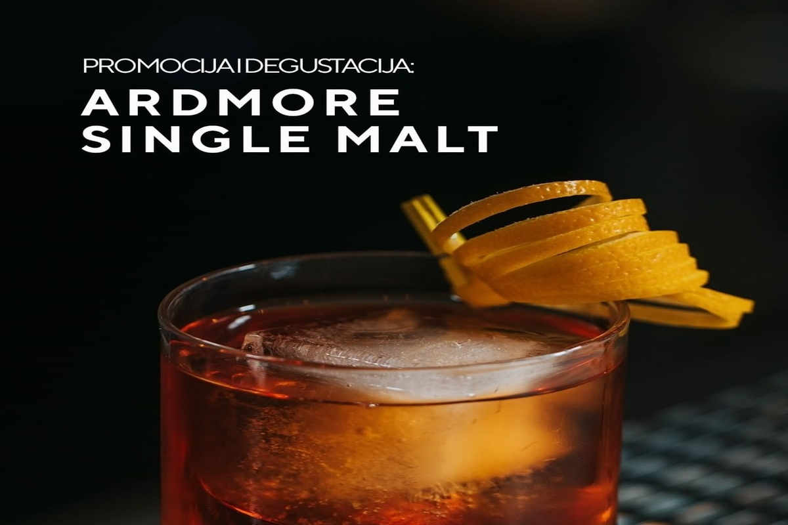
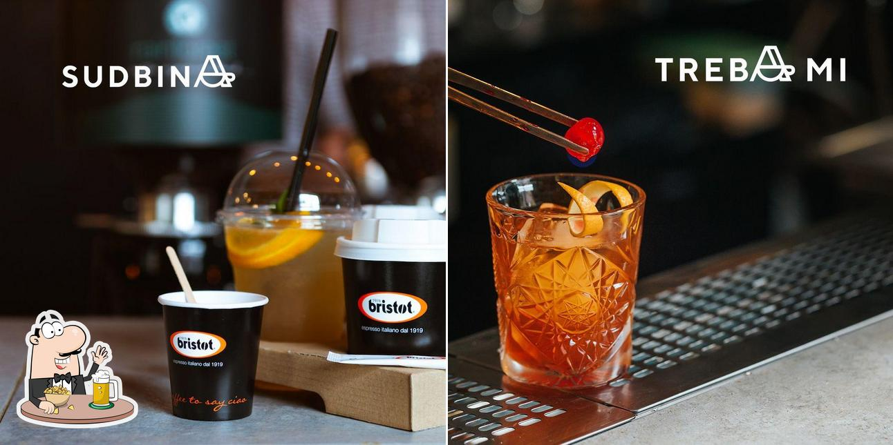
Making website is now one of the easiest thing in the world. You
just need to learn HTML, CSS,
Javascript and you are good to go.
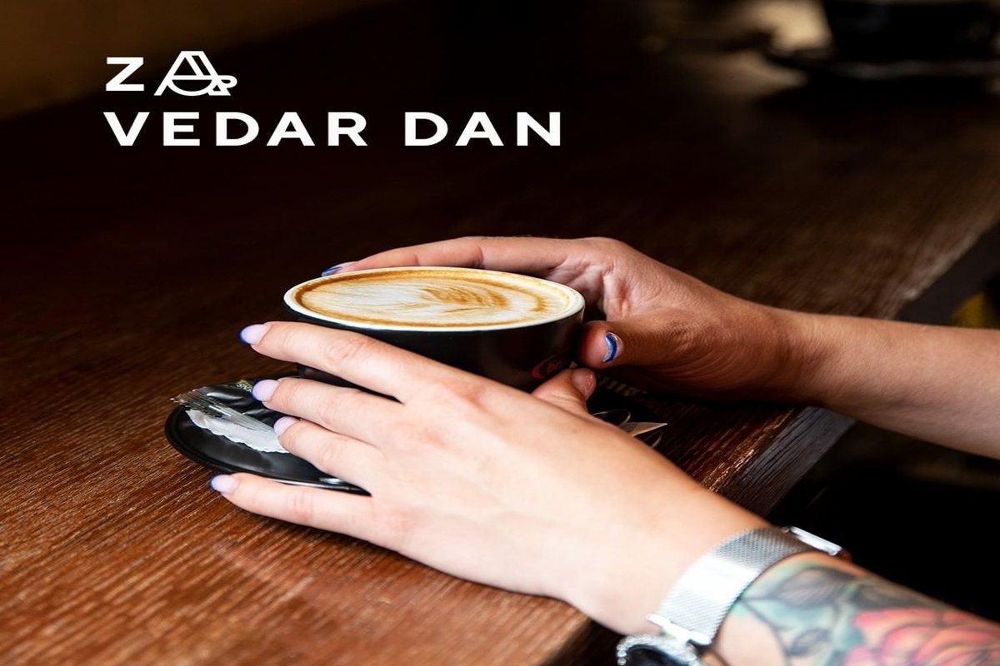
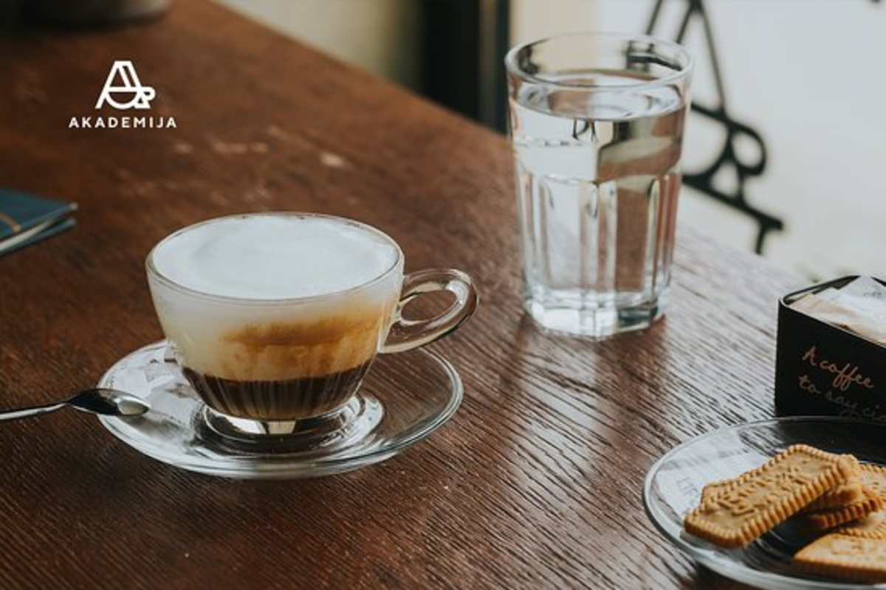
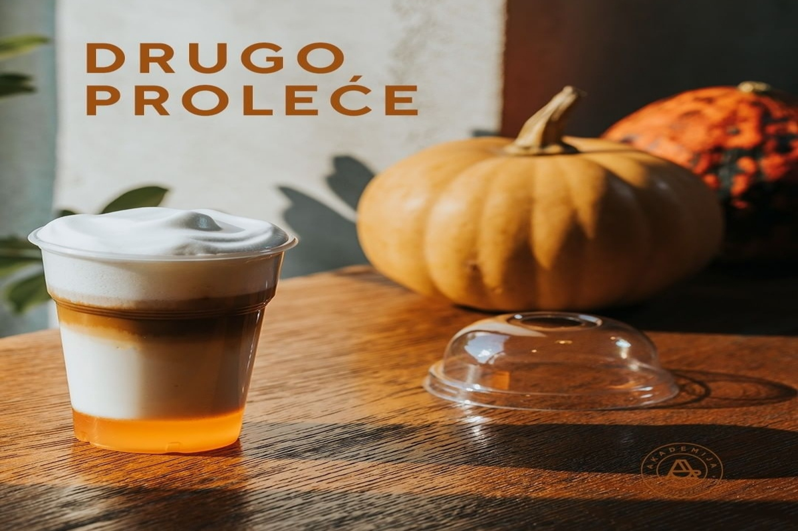
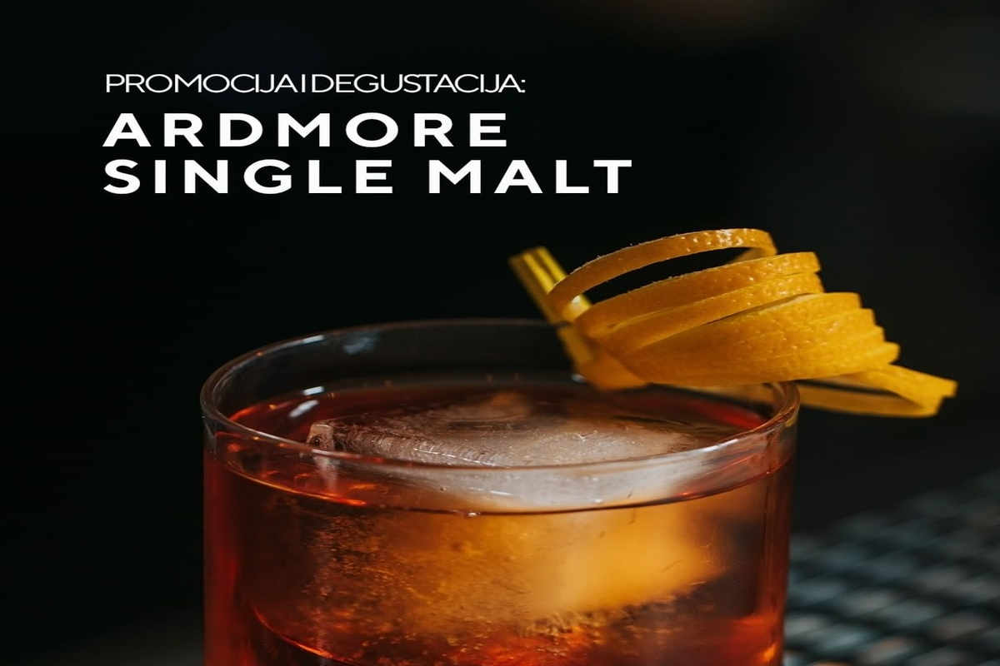
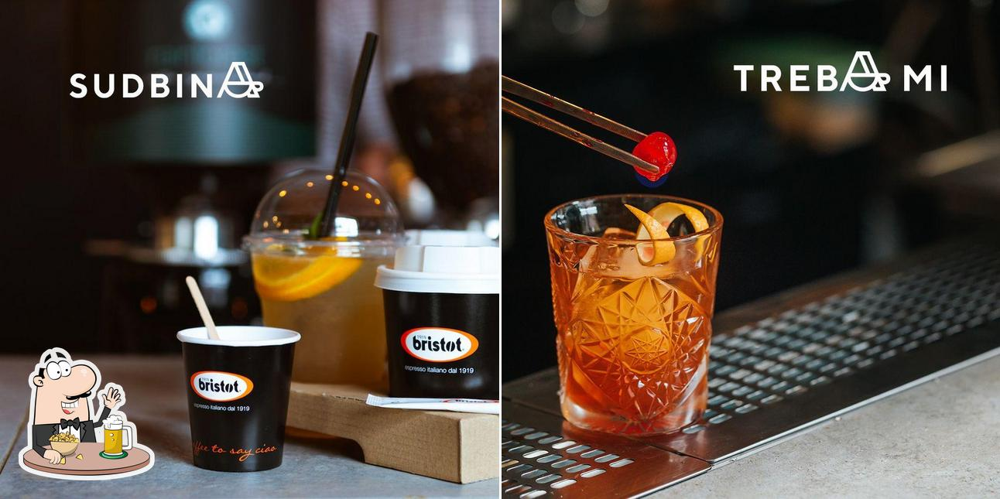
Mi smo old school kafeterija. Govorimo jezikom kafe.
Više faktora čine savršenu kafu, a mi smo sebi zadali zadatak da ih sve ispunimo: najkvalitetnija zrna arabike sa geografskim poreklom, mlevena u trenutku, sa svim sačuvanim karakteristikama, izražajna, aromatična, zdravija od komercijalnih kafa, ispijana sa ili bez mleka. Odaberite Vašu kafu i način pripreme i uživajte!
Mi smo old school kafeterija. Govorimo jezikom kafe.
U svakom trenutku možete odabrati jednu od 5 kafa po Vašem ukusu. Birajte između intenzivnih, kremastih, citrusnih ili mlečnih aroma, kao i koji način pripreme Vam više odgovara: espresso ili filter, sa ili bez mleka, sa različitim dodacima, kao i da li želite bezkofeinsku kafu.
U svakom trenutku možete odabrati jednu od 5 kafa po Vašem ukusu. Birajte između intenzivnih, kremastih, citrusnih ili mlečnih aroma, kao i koji način pripreme Vam više odgovara: espresso ili filter, sa ili bez mleka, sa različitim dodacima, kao i da li želite bezkofeinsku kafu..
U svakom trenutku možete odabrati jednu od 5 kafa po Vašem ukusu. Birajte između intenzivnih, kremastih, citrusnih ili mlečnih aroma, kao i koji način pripreme Vam više odgovara: espresso ili filter, sa ili bez mleka, sa različitim dodacima, kao i da li želite bezkofeinsku kafu.
Mi smo old school kafeterija. Govorimo jezikom kafe.
Uživanje u savršenoj šoljici kafe nekada znači sunčan dan i šetnju pored reke. Ponekad ste u žurbi i samo želite brzi priliv energije na svom putu do uspeha.
A možda želite da iznenadite nekoga omiljenom specialty kafom.